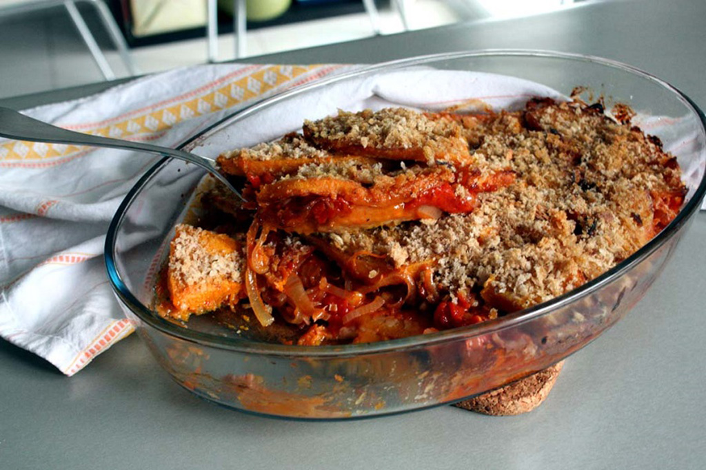
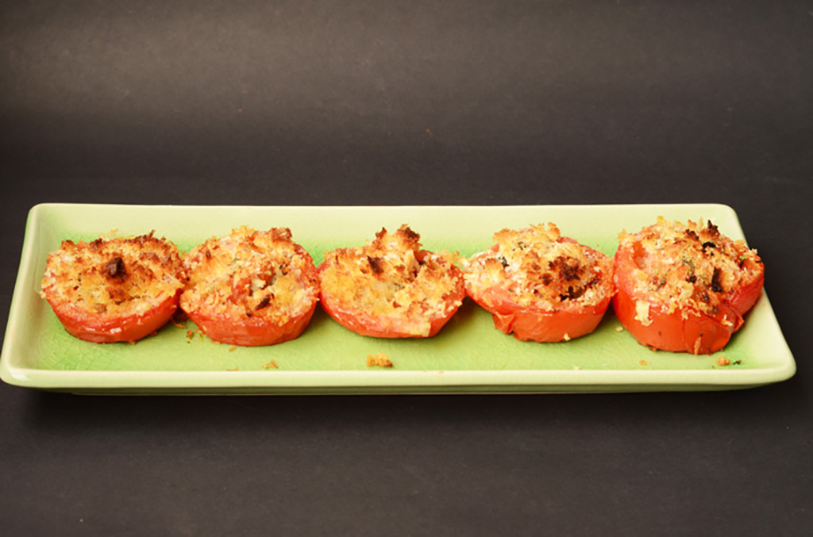
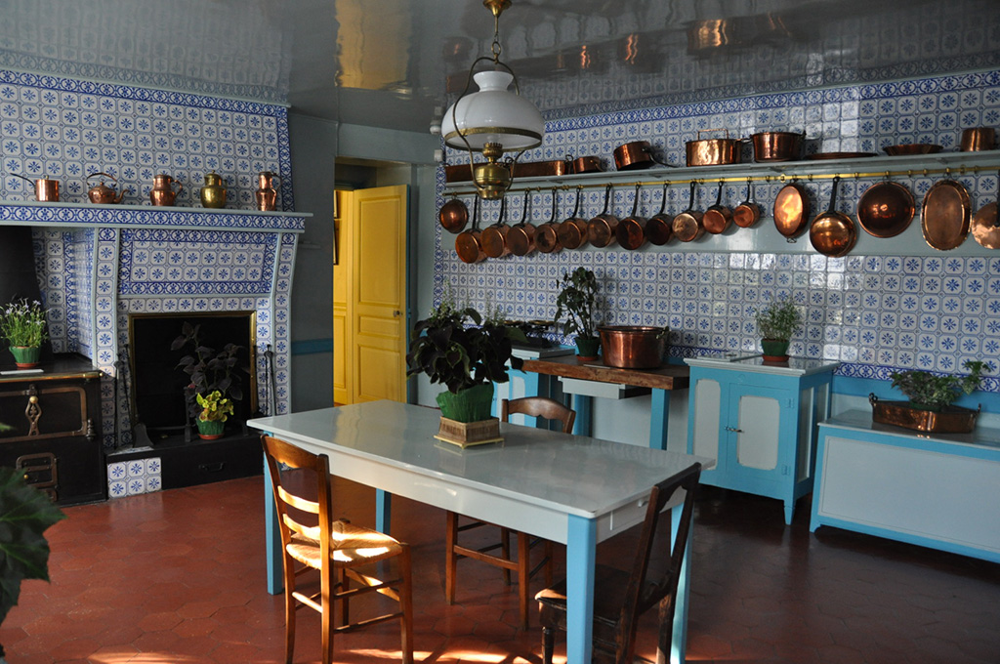

Почнемо із гурмана та імпресіоніста Клода Моне. У його домі була велика кухня, ми можемо уявити, які пахощі там стояли! Рецепти з Живерні можна знайти у “Кулінарній книзі Моне”. Саме там жив і творив відомий французький живописець, саме там був його сад та озерце з ліліями, які неодноразово з’являлися на полотнах митця. Сьогодні знайомимо вас із простою стравою, яку ми самі випробували!
Час, поки тісто у холодильнику: 2 години.
Час підготовки: 30 хвилин.
Час приготування: 2 години.
Почніть з підготовки тіста: вершкове масло наріжте невеликими кубиками і покладіть у миску. Додайте борошно з 1 щіпкою солі, потім перемішайте масу кінчиками пальців, поки суміш не стане схожою на дрібну хлібну крихту. Додайте жовтки і сформуйте з тіста кульку.
Помістіть тісто на злегка присипану борошном робочу поверхню. Придавіть тісто долонею, рухайтеся від центру і до країв, щоб отримати гладке тісто. Повторіть процес кілька разів, поки тісто не стане рівним. Знову сформуйте з нього кулю, оберніть поліетиленовою плівкою і залиште в холодильнику на 2 години.
Коли тісто буде готове, розігрійте духовку до 180 ° C.
Очистіть картоплю і наріжте кружечками. Замочіть скибочки картоплі в холодній воді. Цибулю почистіть і наріжте кружальцями. Наріжте петрушку.
Дістаньте тісто з холодильника і розділіть його на дві частини — одну більшу і одну меншу. Покладіть більший шматок на присипану борошном поверхню і розкачайте його в коло, достатньо велике, щоб викласти дно та боки неглибокої круглої глиняної посудини. Тісто повинно трохи перекривати боки. Другий шматок тіста розкачати в коло, трохи більше за розмір посудини.
Злийте воду з картоплі і обсушіть її чистим паперовим рушником. Розкладіть її у посудині в один шар і посипте кільцями цибулі та нарізаною петрушкою. Приправте сіллю і перцем, а потім додайте вершки. Накрийте другим колом тіста, стискаючи два листи тіста між собою, щоб запечатати краї .
Зробіть отвір у середині верхнього шару тіста (щоб пара виходила під час приготування), і обережно вставте лійку, зроблену з невеликого шматочка щільного паперу. Збийте яйце, а потім помастіть ним тісто. Готування пирога має зайняти 2 години. Якщо він стане золотистим раніше, накрийте його шматком злегка змащеного пергаментного паперу.
Анрі Тулуз-Лотрек теж любив догоджати своїм гостям смачними стравами. Сьогодні ми теж познайомимося з одним із сімейних рецептів художника. Вперше його рецепти вийшли окремою книжкою у 1930 році.
У гарбуза потрібно зрізати шкірку та вийняти насіння. Потім наріжте гарбуз широкими смужками 0,5 см завтовшки. Обваляйте їх у борошні і обсмажити в олії до золотистого кольору. Готові скибочки гарбуза промокнути паперовими рушниками.
На сковорідці підсмажте цибулю на повільному вогні разом з чебрецем і часником, поки цибуля не стане прозора. Додайте помідори, посоліть, поперчіть (можна додати трохи цукру за смаком). Протушкуйте все разом.
В посудину для запікання викладіть шар гарбуза з листям шавлії, потім суміш цибулі та помідорів, далі знову шар гарбуза. Засипте усе панірувальними сухарями і додайте трохи розтопленого вершкового масла. У духовці, розігрітій до 180 градусів, запіканку готуємо близько 45 хвилин.
Продовжимо ми за столом у Поля Сезанна — французького художника. Кажуть, що рецепт запечених помідорів дуже сподобався Огюсту Ренуару, може, і вам буде до вподоби?
Вимийте, ретельно обсушіть та розріжте помідори навпіл. Натріть зрізи сіллю і покладіть половинки (опуклою стороною вгору) на решітку. Під нею треба поставити тарілку. Через 15 хвилин трохи надавіть на помідори пальцями, щоб стік зайвий сік.
Змастіть деко оливковою олією і викладіть на нього помідори (опуклою стороною вниз).
Розігрійте духовку до 200 градусів.
Роздавіть часник і наріжте петрушку. Змішайте їх і додайте трохи меленого перцю. Готову суміш розподіліть на помідорах, після чого рясно полийте їх олією і посипте панірувальними сухарями.
Запікайте помідори до появи золотистої скоринки — не більше 25 хвилин.
Подають цю страву як гарячу закуску або ж гарнір до риби чи м’яса. Подають з хрустким багетом.
Хочеться згадати і екстравагантну Фріду Кало, що вражала своїми полотнами, щоденниками, ставленням до життя. Страв від неї ми очікували теж таких — гарячих, з перчинкою. І не помилилися!
Очистіть картоплю і проваріть протягом 1 хвилини. Обирайте якнайменшу картоплю, якщо у вас трохи більша, то варити потрібно довше. Відкладіть. Протушкуйте томатільйо з водою, перцем чилі та сіллю за смаком до готовності. Дайте трохи охолонути, додайте кінзу та перетворіть суміш у пюре. Нагрійте смалець у сотейнику і пасеруйте цибулю до напівпрозорості. Додайте пюре з томатільйо і проваріть 10 хвилин. Додайте картоплю, перемішайте і продовжуйте варити, поки картопля не стане м’якою, приблизно 15 хвилин.
Подавати в неглибокій мисці. Кількість продуктів розрахована на 8 порцій.
Вилийте виноградний сік і абрикосовий сік в каструлю. Доведіть до кипіння, а потім додайте манку в рідину. Перемішайте дерев’яною ложкою і кип’ятіть 5 хвилин.
Додайте вершки і зніміть з вогню. Коли суміш стане теплою, перемішайте, щоб дати відстоятися. Потім можна додати сливи, нарізані шматочками (можна і без них). Вилийте суміш у неглибокий посуд і поставте в холодильник.
Щоб приготувати збиті вершки, збийте цукрову пудру з вершками. Якщо ви готуєте їх заздалегідь, то покладіть у сито, щоб з молока стекло масло.
При подачі використовуйте збиті вершки для прикрашання.